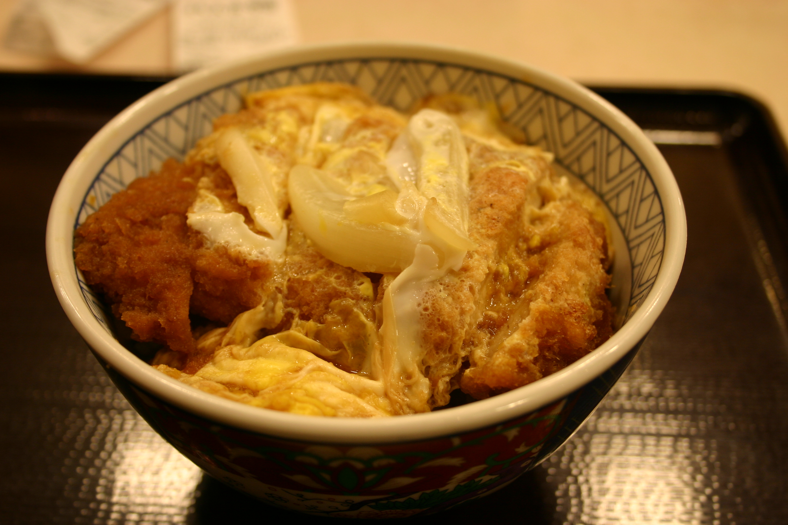
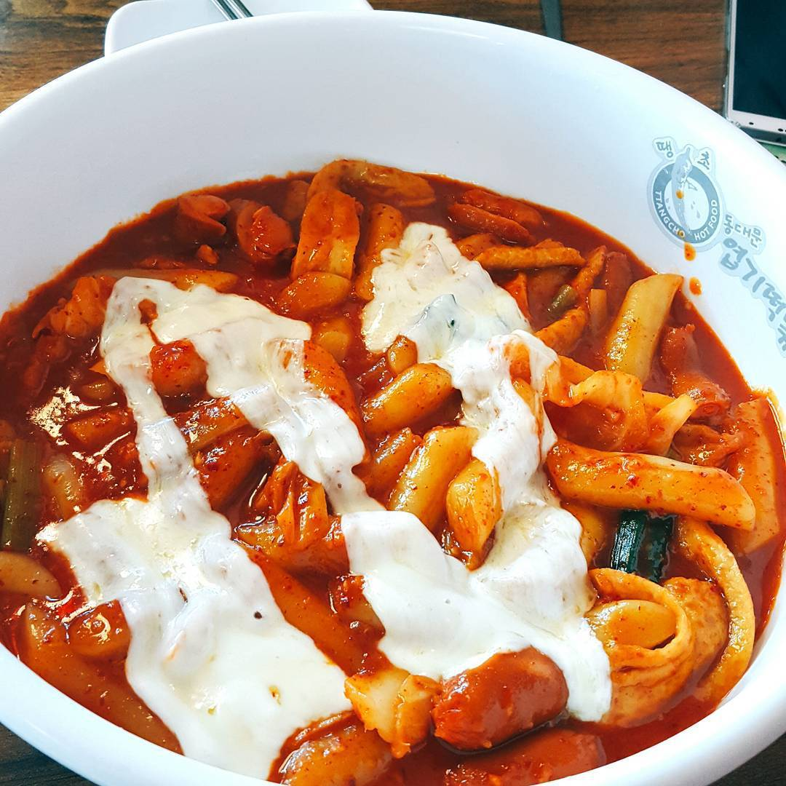

Foods 음식
좋아하는 음식
- 메밀 소바
- 설렁탕
- 돈부리
시원한 간장 베이스 소스에 메밀 면을 찍어먹거나 말아먹으면 정말 맛있습니다.
뜨끈한 설렁탕 국물에 소금을 넣고 밥을 말아 깍뚜기와 같이 먹는 것을 좋아합니다.
짭쪼름한 양파 소스와 돈가스, 새우 튀김 등을 밥과 함께 먹으면 맛있습니다.

싫어하는 음식
- 오이
- 고추
- 많이 매운 것
오이 특유의 향때문에 먹기 힘듭니다.
그냥 싫습니다... 먹기 싫어요 :)
매운 것을 못먹는 편입니다. 친구들은 엽떡 착한 맛을 손쉽게 먹지만 저는 매워서 쩔쩔맵니다.
